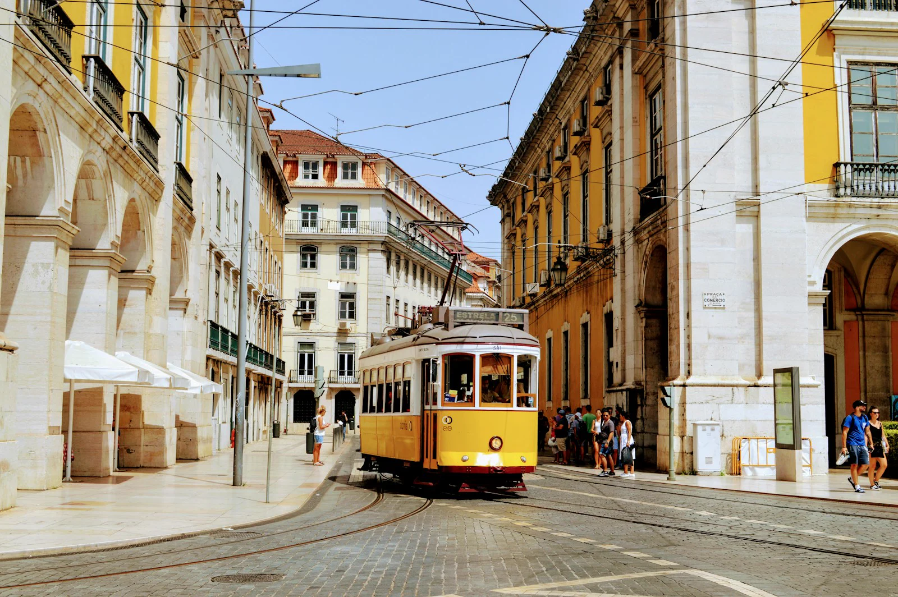
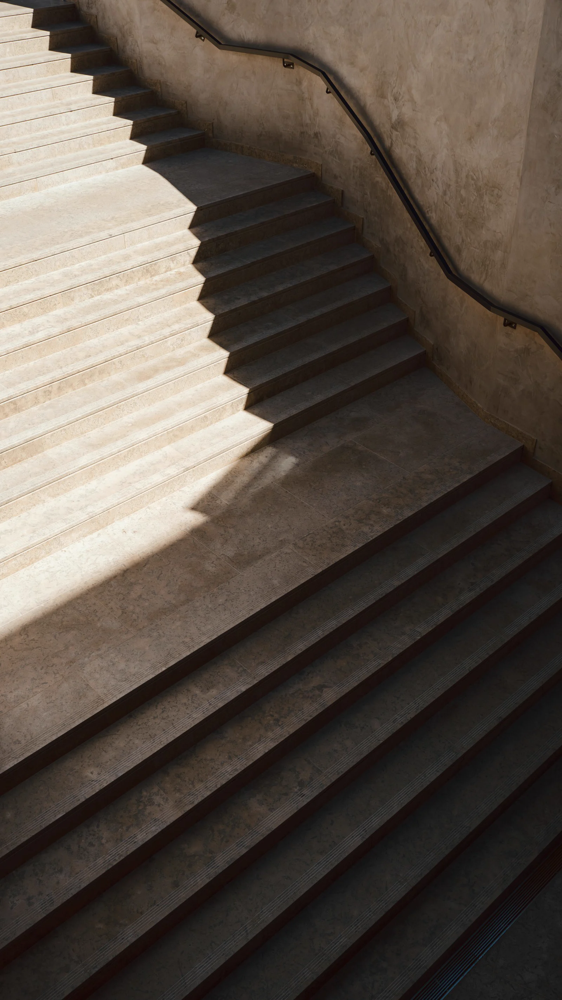
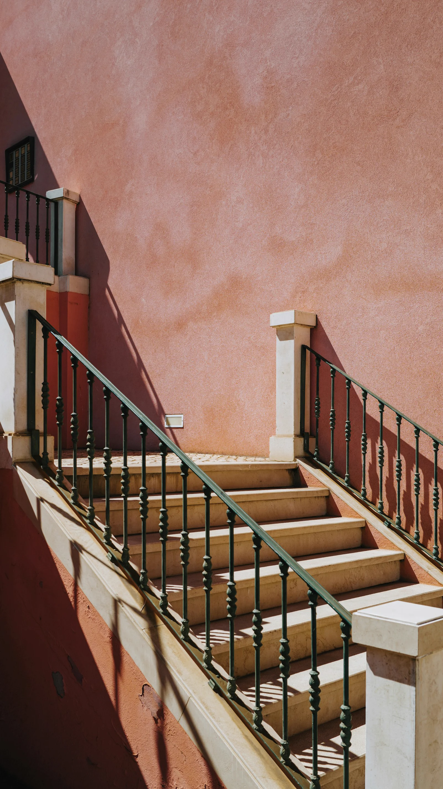

Lisbon. A yellow tram. Nowhere to be.
The next one will do.


Try the other side of the street.

We stayed a while.
Let the walk decide.
We could get on. Or stay here and watch the wires draw across the sky.
Editorial reference: Cereal, by Rich Stapleton / Studio Faculty, via Siteinspire.
Photos: Aayush Gupta, tram; Aleksandr Zaitsev, stairs and facade. Unsplash License.
Design and code: Cauce. Bodoni Moda and Space Mono under OFL licenses.
JavaScript opens the photo stories. The photographs remain visible without it.